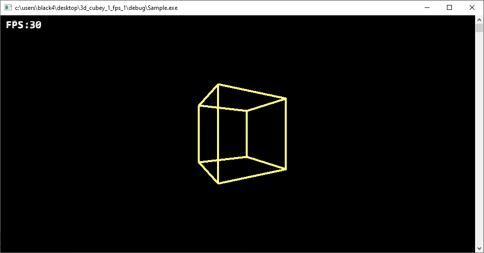

Загрузить архив с примерами ЗДЕСЬ.
Проект с функцией вывода текста, функция вывода текста вынесена в отдельный проект для удобства изучения, загрузить проект /src/02.009-affine_tex/PrintText.
Проект первый вариант подсчета FPS и ограничения FPS можно загрузить /src/02.009-affine_tex/3d_cubeY_1_FPS_1.
Проект второй вариант подсчета FPS и ограничения FPS можно загрузить /src/02.009-affine_tex/3d_cubeY_1_FPS_2.
Примеры отличаются реализацией функций: Limit_FPS() и Calculate_FPS(). Оба проекта используют одинаковые функции для вывода текста, и аффинного текстурирования (для вывода текста).
Для генерациии BMP файла со шрифтом использовалась программа Codehead’s Bitmap Font Generator (CBFG), которую можно загрузить по адресу https://www.codehead.co.uk/cbfg/ Вы можете сами попробовать создать шрифт с помощью этой программы. Так же посмотрите PDF файл с документацией к данной программе, который можно загрузить с этого сайта или ЗДЕСЬ. В документации на 29 странице есть описание в виде псевдокода как использовать изображение шрифта для вывода текста в программе.
Примеры проектов в этой главе используют изображение шрифта BMP 24 бита глубина цвета, то есть альфа- канал не учитывается.
Так же в папке с примером /src/02.009-affine_tex/BMP32_Font_Image есть файл ExportedFont.bmp - это 32 битный BMP файл с альфа каналом. Вы можете нажать правой кнопкой мыши (под Windows) на файле ExportedFont.bmp, выбрать Свойства файла, и выбрать вкладку Подробно - будет указано что это изображение 32 бит BMP. Мы рассматривали ранее как загружать BMP 32 бит, и как использовать альфа- канал в изображении, попробуйте реализовать пример с печатью текста из этой главы с использованием альфа- канала.
Как я сделал изображение ExportedFont.bmp 32 бита - я воспользовался программой Codehead’s Bitmap Font Generator (CBFG) создал изображение со шрифтом, и сделал экспорт в TGA 32 бита. Потом это изображение TGA 32 бита я сконвертировал в BMP 32 бита. К сожалению программа Codehead’s Bitmap Font Generator (CBFG) не может сразу экспортировать изображение в BMP 32 бита. Я воспользовался он- лайн конвертором, что бы из TGA 32 изображения сделать BMP 32 бита изображение.
